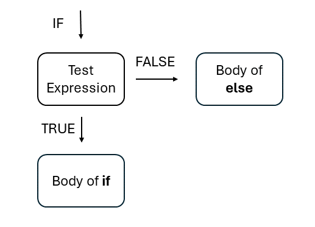

Chapter 1 Grundlagen
In diesem Kapitel lernst du die Benutzeroberfläche und die grundlegenden Funktionen in R kennen. Dazu gehören sowohl die Oberfläche als auch die Basisfunktionen für mathematische Berechnungen. Außerdem wirst du in eine der wichtigsten logischen Operationen eingeführt: die if-else-Struktur. Ziel dieses Kapitels ist es, dir einen Überblick über RStudio zu geben und dir ein erstes Gefühl sowie eine Intuition für R zu vermitteln – anhand mathematischer Konzepte, die du bereits kennst. Vergiss nicht: Niemand ist perfekt. Am Anfang haben alle Schwierigkeiten, und das kann frustrierend sein. Das ist völlig normal beim Lernen einer neuen Programmiersprache. Viel Spaß!
1.1 RStudio kennenlernen und einen Workflow etablieren
1.1.1 Die Benutzeroberfläche
RStudio besteht aus vier Hauptbereichen, die jeweils eine bestimmte Funktion erfüllen:

Oben links befindet sich das Source-Fenster. Hier schreibst und ausführst du deinen Code. Die Konsole öffnet sich, nachdem du ausgewählt hast, welchen Skripttyp du verwenden möchtest:
Das klassische R-Skript (
Ctrl + Shift + N): In dieser Datei kannst du Code schreiben und ausführen. Kommentare fügst du hinzu, indem du ein#vor die entsprechende Zeile setzt.Die R-Markdown-Datei: Im Gegensatz zum klassischen R-Skript wird in einer R-Markdown-Datei nicht alles automatisch als Code interpretiert (sofern es nicht als Code gekennzeichnet ist). Eine R-Markdown-Datei bietet die Möglichkeit, HTML- oder PDF-Outputs zu erzeugen. Das erhöht die Effizienz, insbesondere bei der Zusammenarbeit. Außerdem kannst du Code in sogenannten Chunks strukturieren und hast zahlreiche Optionen zur Steuerung dieser Chunks. In QM und AQM wirst du ausschließlich mit R Markdown arbeiten und mit der Zeit die Vorteile erkennen.
Oben rechts siehst du das Environment. Hier erhältst du einen Überblick über alle aktuell geladenen Objekte. Mehr über Objekte erfährst du später im Kurs.
Unten links befindet sich die Konsole: Hier erscheinen die Ergebnisse, sobald du deinen R-Code ausführst. Du kannst Code auch direkt in die Konsole eingeben. Allerdings wird dieser Code nicht gespeichert, weshalb wir in der Regel im Editor arbeiten.
Unten rechts findest du den Output-Bereich: Hier erscheinen beispielsweise Plots (bei Verwendung eines klassischen R-Skripts) und andere Ausgaben. Für den Moment musst du dich damit noch nicht intensiver beschäftigen.
1.1.2 Oberfläche anpassen (optional)
Du kannst das Erscheinungsbild von
RStudioändern:Tools > Global Options > Appearance. Hier kannst du unter anderem die Zoomstufe der Konsole, die Schriftgröße und das Farbschema anpassen. Außerdem kannst du ein dunkles Theme aktivieren. Probiere verschiedene Einstellungen aus und finde heraus, was für dich am angenehmsten ist – du kannst es jederzeit wieder ändern.Du kannst das Pane Layout ändern, also die Anordnung der vier Bereiche:
Tools > Global Options > Pane Layout.Nutze Tastenkürzel. RStudio bietet viele voreingestellte Shortcuts, die sehr hilfreich sind. Du solltest dich mit ihnen vertraut machen:
Tools > Keyboard Shortcuts Helpoder direkt mitCtrl + Shift + K. Du kannst auch eigene Shortcuts definieren – das werden wir im Kurs tun.
1.2 Los geht’s: R als leistungsfähiger Taschenrechner
1.2.1 Mathematische Operationen in R
R kann für einfache Berechnungen verwendet werden:
## [1] 2## [1] 0## [1] 1## [1] 1## [1] 1.414214Du kannst R auch für logische TRUE/FALSE-Aussagen verwenden – mithilfe von Vergleichsoperatoren:
>größer als<kleiner als==gleich!=ungleich>=größer oder gleich<=kleiner oder gleich
## [1] TRUE## [1] FALSE## [1] TRUE## [1] TRUE## [1] FALSE## [1] TRUEWeitere logische Operatoren:
&elementweises UND – gibt TRUE zurück, wenn beide Aussagen TRUE sind|elementweises ODER – gibt TRUE zurück, wenn mindestens eine Aussage TRUE ist!logisches NICHT – kehrt den Wahrheitswert um
## [1] TRUE## [1] TRUE## [1] FALSE1.2.2 Verwendung von Funktionen
Für komplexere Operationen solltest du Funktionen verwenden. Funktionen bestehen meist aus einem Namen mit runden Klammern. Innerhalb der Klammern befinden sich sogenannte Argumente. Diese liefern der Funktion die benötigten Informationen.
Beispiele:
sqrt(x)berechnet die Quadratwurzel,xist eine Zahl.exp(x)berechnet e hoch x.mean(x)berechnet den Mittelwert.median(x)berechnet den Median.
sqrt(x = 36) #Quadratwurzel
exp(x = 0) #Exponentialfunktion
print("Über 7 Brücken musst du gehen") #Mit diesem Befehl kannst du beliebigen Text ausgebenManche Funktionen erfordern spezielle Eingaben. Wenn du Hilfe brauchst:
Setze ein Fragezeichen vor eine Funktion und führe den Befehl aus.
Oder nutze
help()und gib den Funktionsnamen ohne Klammern an.
1.2.3 Objekte zuweisen und ausgeben
Ergebnisse werden meist in Objekten gespeichert.
- Mit
<-weist du einem Objekt einen Wert zu.
## [1] 11Wir können nun mit den Objekten weiterarbeiten und Sie nachnutzen:
Lasst uns für den Anfang doch einfach die Summe aus dem Objekt
PizzaundColabildenWir könnten die Summe aus
PizzaundColaebenfalls in einem weiteren Objekt speichern und dann dieses Objekt weiternutzen und so könnte man stetig weitere Objekte aus Objekten entstehen lassen.
## [1] 11## [1] 1211.2.4 Vektoren
Ein Vektor enthält mehrere Werte.
- Mit
c()erzeugst du einen Vektor. Du kannst die Werte innerhalb des Vektors mit einem Komma (,) trennen.
## [1] "Pizza" "Kebab" "Curry" "Fish" "Burrito"## [1] 7.5 6.0 8.5 3.0 11.0## [1] 3.5 3.0 4.0 2.5 3.0Now we can calculate the prices for a decent meal in one step by adding the two vectors together. The vector prices_combined will give us the prices for a meal plus a cola:
Jetzt können wir aus den Preis für die mahlzeiten (Essen + Getränk) in einem Schritt berechnen, indem wir die beiden Vektoren addieren und so einen Vektor bekommen, der den Preis für das Essen plus die Cola anzeigt.
## [1] 11.0 9.0 12.5 5.5 14.01.2.5 Objekt Klassen
Objekte können unterschiedliche Datentypen besitzen:
| Numeric | Zahlen | c(1, 2.4, 3.14, 4) |
| Character | Text | c("1", "blue", "Spaß", "monster") |
| Logical | TRUE/FALSE | c(TRUE, FALSE, TRUE, FALSE) |
| Factor | Kategorie | c("Stimme nicht zu", "Neutral", "Stimme zu") |
Für die Datenanalyse erfordern Befehle manchmal spezielle Objektklassen. Mit dem Befehl class() können wir die Klasse herausfinden. Und mit as.numeric können wir beispielsweise Klassen ändern, indem wir sie sich selbst zuweisen, wobei es üblich ist, sie einem neuen Objekt zuzuweisen:
## [1] "numeric"## [1] "character"## [1] "numeric"Wir können auch die Klassen von Variablen ändern. Dazu können wir as.factor(), as.numeric(), as.character() usw. verwenden. Das können Sie für jede Klasse tun. Lassen Sie uns cola_preise in einen Vektor ändern.
- Dazu ändern wir call
as.character()und fügen das Objekt hinzu. Anschließend weisen wir es einem anderen Objekt namenscola_preise_characterzu. Dieses Objekt hat die Klasse „character”.
#We want the cola_prices vector to be a character
cola_preise_character <- as.character(cola_preise)
#Checking it
class(cola_preise_character)## [1] "character"## [1] "3.5" "3" "4" "2.5" "3"1.2.6 Matrizen
1.2.6.1 Matrizen erstellen
Es gibt verschiedene Möglichkeiten, eine Matrix zu erstellen. Beginnen wir damit, die Vektoren einfach als Spalten miteinander zu verbinden. Dazu können Sie cbind() verwenden, wenn Sie Spalten miteinander verbinden möchten. rbind() ist daher der Befehl, um Zeilen miteinander zu verbinden.
Ihr müsst
cbind()aufrufen und die Vektoren angeben, die ihr miteinander verbinden möchtet.Das Gleiche gilt für
rbind().
preis_index <- cbind(essen,
preise,
cola_preise) #Spalten zusammenfügen
print(preis_index) #Ausgeben lassen## essen preise cola_preise
## [1,] "Pizza" "7.5" "3.5"
## [2,] "Kebab" "6" "3"
## [3,] "Curry" "8.5" "4"
## [4,] "Fish" "3" "2.5"
## [5,] "Burrito" "11" "3"#Lasst uns das Gleiche machen, indem wir die Zeilen zusammenfassen
preis_index2 <- rbind(essen,
preise,
cola_preise) #Wir binden die Zeilen zusammen
print(preis_index2) #Ausgeben lassen## [,1] [,2] [,3] [,4] [,5]
## essen "Pizza" "Kebab" "Curry" "Fish" "Burrito"
## preise "7.5" "6" "8.5" "3" "11"
## cola_preise "3.5" "3" "4" "2.5" "3"Wir können eine Matrix auch durch Simulation generieren. Dabei gibt es viele Dinge zu beachten, einfach weil vieles möglich ist:
Zuerst ruft ihr den Befehl
matrix()auf.Das erste Argument ist ein Zahlenintervall. Das sind sozusagen unsere gesamten Beobachtungen.
Das zweite und dritte Argument sind unsere Zeilenzahl
nrow()und unsere Spaltenzahlncol(). Wenn Sie diese miteinander multiplizieren, müssen sie die zuvor definierte Anzahl von Beobachtungen ergeben. Wir haben 20 Zahlen und 4 mal 5 ergibt 20, also ist das in Ordnung.Zuletzt müssen Sie festlegen, ob die Zahlen von links nach rechts, also zeilenweise, oder von oben nach unten angeordnet werden sollen. Wir gehen beide Beispiele durch, dann sollte es klar werden.
Der Befehl
dim()ist hilfreich, weil er uns zeigt, wie wir die Dimensionen überprüfen können.
# Matrix erzeugen
matrix_beispiel <- matrix(1:20, nrow = 4, ncol = 5, byrow = T) #
# Checking it
print(matrix_beispiel)## [,1] [,2] [,3] [,4] [,5]
## [1,] 1 2 3 4 5
## [2,] 6 7 8 9 10
## [3,] 11 12 13 14 15
## [4,] 16 17 18 19 20## [1] 4 5# Was passiert wenn wir byrow auf FALSE setzen?
matrix_beispiel2 <- matrix(1:20, nrow = 4, ncol = 5, byrow = F)
# Checking it
print(matrix_beispiel2)## [,1] [,2] [,3] [,4] [,5]
## [1,] 1 5 9 13 17
## [2,] 2 6 10 14 18
## [3,] 3 7 11 15 19
## [4,] 4 8 12 16 20## [1] 4 51.2.6.2 Arbeiten mit Matrizen
Wir möchten mit Matrizen arbeiten. Als Erstes müssen wir lernen, wie man Matrizen überprüft:
Zunächst ruft ihr die Matrix auf. In unserem Beispiel
matrix_beispielmit eckigen Klammern.In diesen Klammern könnt ihr die einzelne Zeilen aufrufen, indem ihr die Nummer der Zeile eingebt, die ihr überprüfen möchten, und dann ein Komma dahinter setzt, um R zu signalisieren, dass ihr die Zeile haben möchten.
Wenn ihr eine Zahl hinter das Komma setzt, weist ihr R an, euch die Spalte mit der Nummer anzuzeigen.
Wenn ihr eine einzelne Zahl möchtet, müsst ihr eine Zeile und eine Spalte definieren.
#Lasst uns angewöhnen mit Objekten zu arbeiten
zeile <- 1
spalte <- 1
#Ausgeben lassen
print(objekt1 <- matrix_beispiel[zeile, ]) #erste zeile ausgeben## [1] 1 2 3 4 5## [1] 1 6 11 16print(objekt3 <- matrix_beispiel[zeile, spalte]) #Wert in erster Spalte und erster Zeile ausgeben lassen## [1] 1## [,1] [,2] [,3] [,4] [,5]
## [1,] 1 2 3 4 5
## [2,] 6 7 8 9 10
## [3,] 11 12 13 14 15
## [4,] 16 17 18 19 20## [1] 4## [1] 5## [1] 4 51.2.7 Data Frames
Die nächste Art der Datenspeicherung sind Data Frames. Dies sind die Standard-Speicherobjekte für Daten in R. Der Grund dafür ist einfach: Matrizen können nur einen Variablentyp enthalten (numerisch, Zeichen usw.), während Data Frames verschiedene Datentypen beinhalten können.
- In diesem Beispiel haben wir einen Datensatz mit der Variable „Land“ (character), der Hauptstadt (character), der Bevölkerung (numeric) in Millionen und einer Angabe, ob das Land in Europa liegt (logisch).
# making an example df
df_beispiel <- data.frame(
land = c("Austria", "England",
"Brazil", "Germany"),
hauptstadt = c("Vienna", "London",
"Brasilia", "Berlin"),
bev = c(9.04, 55.98, 215.3, 83.8),
europa = c(TRUE, FALSE, TRUE, TRUE)
)
# Checking it
print(df_beispiel)## land hauptstadt bev europa
## 1 Austria Vienna 9.04 TRUE
## 2 England London 55.98 FALSE
## 3 Brazil Brasilia 215.30 TRUE
## 4 Germany Berlin 83.80 TRUE- Wenn Sie mit Datenrahmen arbeiten möchten, können Sie Spalten aufrufen, indem Sie den Namen des Datenrahmens mit einem Dollarzeichen dahinter und anschließend den Namen der Spalte, die Sie überprüfen möchten, aufrufen:
## [1] "Austria" "England" "Brazil" "Germany"Sie sehen, dass Sie den Vektor der Spalte erhalten. Wir können noch weiter gehen und mehr mit Datenrahmen arbeiten
Rufen wir eine einzelne Beobachtung im Datenrahmen auf: Sie rufen die Spalte, die Sie untersuchen möchten, auf die gleiche Weise wie zuvor auf, diesmal fügen Sie jedoch eckige Klammern hinzu und geben die Nummer der Beobachtung in der Spalte an.
Wir möchten „Brazil” haben. „Brazil” ist das dritte Element von df_beispiel$land, daher setzen wir eine 3 in die eckigen Klammern:
## [1] "Brazil"Das Letzte, was wir mit Datenrahmen tun müssen, ist, Spalten basierend auf Bedingungen zu erhalten. Im nächsten Teil dieses Kapitels werden wir eine Methode dafür kennenlernen, aber wir können dies auch mit dem Datenrahmen tun. Stellen Sie sich vor, Sie möchten einen Vektor von df$land haben, aber nur mit Ländern, deren df$bev größer als 60 ist. Das bedeutet eine Bevölkerung von mehr als 60 Einwohnern.
Dazu rufen wir die Spalte
df$landauf und setzen sie in eckige Klammern.Außerdem müssen wir in den eckigen Klammern die Bedingung aufrufen. Also die Variable df_example$pop und sie auf größer als 60 setzen. Et voilà, wir erhalten die Spalten von
df_example$land, die größer als 60 sind.
## [1] "Brazil" "Germany"1.3 ifelse statements und die ifelse() funktion
Einer der am häufigsten verwendeten und daher wichtigsten logischen Operatoren in der Programmierung im Allgemeinen sind ifelse-Befehle. Sie kennen sie wahrscheinlich aus Excel, aber aufgrund ihrer Nützlichkeit sind sie in jeder Programmiersprache enthalten. Eine kurze Erinnerung an ihre Logik.
1.3.1 If else statements mit einer Bedingung
Zunächst definieren Sie eine if-Anweisung. Die if-Anweisung ist eine logische Anweisung, zum Beispiel größer, kleiner als X. Die logische Anweisung ist Ihr Testausdruck. Damit weisen Sie das Programm an, die Bedingung für ein Objekt zu testen, in Excel eine Zelle oder jedes andere Objekt, das in Ihrer Programmiersprache getestet werden kann. Das Programm prüft dann, ob die Bedingung WAHR oder FALSCH ist. Bis zu diesem Punkt sind alle if-else-Anweisungen gleich, nun sehen wir uns einige Varianten an:

Abbildung 2 zeigt die Logik einer if-else-Anweisung mit einer Bedingung. Wir sagen, dass etwas passieren soll, wenn der Testausdruck wahr ist. Wenn nicht, passiert nichts, da nichts definiert wurde.
Wir möchten, dass R unsere Noten in der Schule bewertet. Aus diesem Grund definieren wir ein Objekt namens „grade” und weisen ihm den Wert 1,7 zu.
Im nächsten Schritt rufen wir „if“ auf und öffnen eine Klammer. Wir fügen den Testausdruck in die Klammer ein, der lauten soll: „if grade, our grade is smaller than 2“ (wenn Note, unsere Note kleiner als 2 ist).
Dann öffnen wir geschweifte Klammern, um zu definieren, was passieren soll, wenn der Testausdruck „TRUE“ (wahr) ist. Das heißt, was passieren soll, wenn die Note besser als 2 ist. Wir definieren „print(„Good Job“)“.
Hier ist die generelle Logik von ifelse statements:
if (Testausdruck) {Körperausdruck}
note <- 1.7
if(note < 2) {
print("Good Job")
} # Sie schreiben if(Testausdruck) und dann den {Körperausdruck}, also den Körperausdruck in geschweiften Klammern.## [1] "Good Job"note <- 2.5
if(note < 2) {
print("Good Job")
} #Da die Bedingung nicht erfüllt ist, passiert nichts.Wie Sie sehen können, passiert nichts, wenn die Note größer als 2 ist. Andernfalls wird wie vorgesehen „Good Job“ ausgegeben.
1.3.2 if-Anweisungen mit else-Bedingung
Ein if-Befehl allein ist ziemlich nutzlos. Interessant wird es, wenn wir auch einen Körper für den else-Befehl haben. Was nun passiert, ist, dass nicht mehr nichts ausgegeben wird, wenn der Testausdruck FALSE ist. Stattdessen wird der Körper von else ausgegeben.

Jetzt fügen wir einfach einen else-Block in die Gleichung ein. In R bedeutet das, dass wir ihn definieren müssen:
- Wir nehmen das if-else-Statement aus dem vorherigen Abschnitt und fügen nun ein
elsehinzu und öffnen geschweifte Klammern{}, in denen wir den Inhalt vonelsedefinieren.
## [1] "Life goes on"## [1] "Good Job"Wir sehen, dass in jedem Fall ein Ergebnis ausgegeben wird.
1.3.3 Der ifelse() Befehl
Das oben gezeigte ist die manuelle Art, eine if-else-Bedingung zu programmieren. In R gibt es jedoch auch die Funktion ifelse(), bei der man keine verschiedenen Farben und geschweiften Klammern benötigt.
- Man ruft
ifelse()auf. - Das erste Argument ist der Testausdruck.
- Das zweite Argument ist der Ausdruck für den if-Fall.
- Das dritte Argument ist der Ausdruck für den else-Fall.
ifelse(test expression, body of if, body of else)
## [1] "Good Job"1.3.4 if-else-Ketten / if-else mit mehreren Bedingungen
Die Welt ist komplex. Manchmal sind Dinge nicht einfach schwarz oder weiß. Deshalb müssen wir auf verschiedene Szenarien vorbereitet sein. Weniger dramatisch formuliert: if-else-Statements können auch mehrere else-Zweige enthalten.
Nehmen wir das Beispiel, dass wir abhängig von unserer Note unterschiedliche Ausgaben von R erhalten möchten. R prüft zuerst die erste Bedingung, danach den zweiten Testausdruck und so weiter, bis eine passende Bedingung gefunden wird und diese ausgegeben wird. Wenn keine Bedingung zutrifft, muss ein letzter else-Ausdruck definiert werden.
- Man fügt
else ifmit geschweiften Klammern hinzu, in denen der Testausdruck steht. - Zum Schluss definiert man ein
elsemit geschweiften Klammern für den Fall, dass keine Testbedingung zutrifft.
grade <- 3.3 #Note zuweisen
if (grade == 1.0) {
print("Amazing")
} else if (grade > 1.0 & grade <= 2.0) {
print("Good Job")
} else if (grade > 2.0 & grade <= 3.0) {
print("OK")
} else if (grade > 3.0 & grade <= 4.0) {
print("Life goes on")
} else {
print("No expression found")
}## [1] "Life goes on"grade <- 1.7 #Note zuweisen
if (grade == 1.0) {
print("Amazing")
} else if (grade > 1.0 & grade <= 2.0) {
print("Good Job")
} else if (grade > 2.0 & grade <= 3.0) {
print("OK")
} else if (grade > 3.0 & grade <= 4.0) {
print("Life goes on")
} else {
print("No expression found")
}## [1] "Good Job"grade <- 5.0 #Note zuweisen
if (grade == 1.0) {
print("Amazing")
} else if (grade > 1.0 & grade <= 2.0) {
print("Good Job")
} else if (grade > 2.0 & grade <= 3.0) {
print("OK")
} else if (grade > 3.0 & grade <= 4.0) {
print("Life goes on")
} else {
print("No expression found")
}## [1] "No expression found"Dasselbe können wir auch mit einer sogenannten verschachtelten ifelse-Funktion umsetzen, indem wir den ifelse()-Befehl verwenden:
- Anstatt eine else-Bedingung zu definieren, definieren wir einfach ein weiteres
ifelse(). - Das wiederholen wir so lange wie nötig.
- Das letzte
ifelse()enthält dann die finale else-Bedingung.
grade <- 1.7 #Note zuweisen
ifelse(grade == 1.0, "Amazing",
ifelse(grade > 1 & grade <= 2, "Good Job",
ifelse(grade > 2 & grade <= 3, "OK",
ifelse(grade > 3 & grade <=4, "Life goes on",
"No expression found"
)
)
)
)## [1] "Good Job"grade <- 3.3 #Note zuweisen
ifelse(grade == 1.0, "Amazing",
ifelse(grade > 1 & grade <= 2, "Good Job",
ifelse(grade > 2 & grade <= 3, "OK",
ifelse(grade > 3 &
grade <=4, "Life goes on",
"No expression found")
)
)
)## [1] "Life goes on"1.4 Ausblick
Dieser Abschnitt war eine kurze Einführung in die Grundlagen von R. Er wurde bewusst einfach gehalten, um ein erstes Gefühl für R zu vermitteln. Diese Inhalte bilden die absoluten Grundlagen, auf denen alles Weitere aufbaut.
1.5 Übungsabschnitt
1.5.1 Übung 1: Erstellen deines ersten Vektors
Erstelle einen Vektor namens my_vector mit den Werten 1, 2, 3 und überprüfe seine Klasse.
1.5.2 Übung 2: Erstellen deiner ersten Matrix
Erstelle eine Matrix namens student. Diese soll Informationen über name, age und major enthalten. Erstelle drei Vektoren mit jeweils drei Einträgen und verbinde sie anschließend zu der Matrix student. Gib die Matrix aus.
1.5.3 Übung 3: ifelse Funktion
Schreibe ein ifelse-Statement, das überprüft, ob eine gegebene Zahl positiv oder negativ ist. Wenn die Zahl positiv ist, gib "Number is positive" aus, ansonsten "Number is negative". Du kannst entscheiden, ob du die ifelse()-Funktion oder eine if-else-Bedingung verwendest.